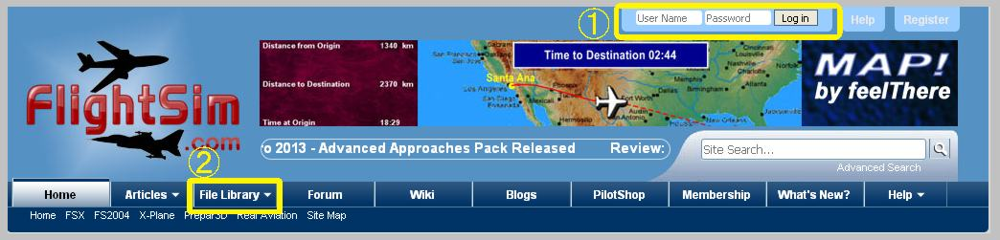
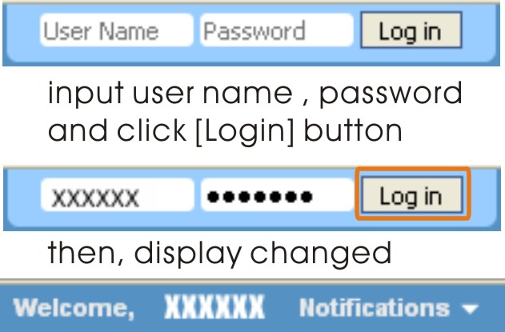
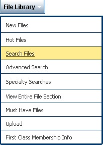
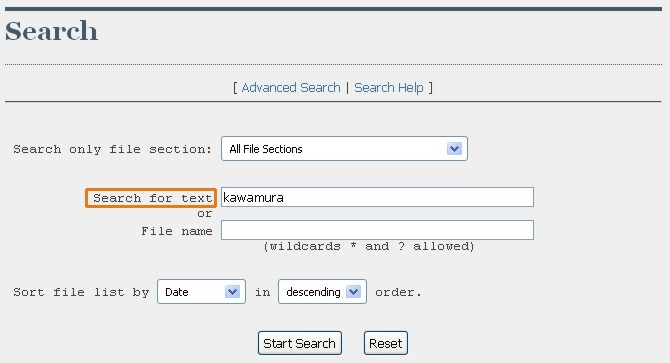
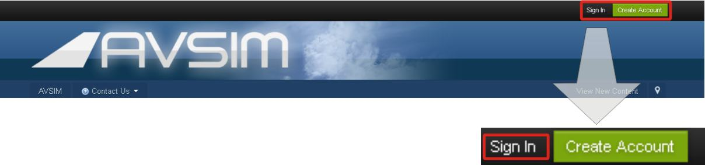
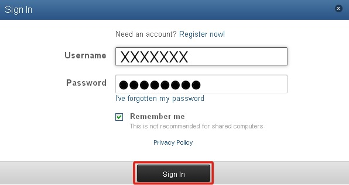
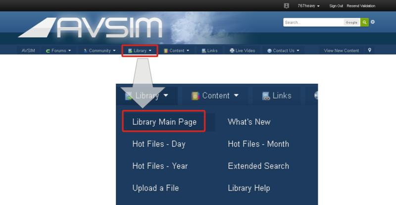
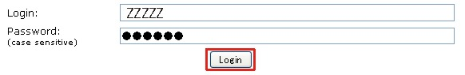

How to get the add-on sceneries
The following files improve specific sceneries of FS9(FS2004) / FSX.
In order to use the following sceneries, it is required to already have installed FS2004 / FSX in your PC. Even if only these sceneries come to hand, alone, it does not operate. Be careful. Refer to an attached document file about installation.
Any scenery is registered as freeware.
Scenery Title |
File Name |
| FSX Scenery FRENCH POLYNESIA TUAMOTU ARCHIPELAGO SCENERY PART A | FTPA-XA.zip |
| FSX Scenery FRENCH POLYNESIA TUAMOTU ARCHIPELAGO SCENERY PART B | FTPA-XB.zip |
| FSX Scenery FRENCH POLYNESIA TUAMOTU UPDATE for SP2 | FTPA-sp2.zip |
| FS2004 Scenery FRENCH POLYNESIA TUAMOTU ARCHIPELAGO SCENERY 2006 PART A | fpta2k6a.zip |
| FS2004 Scenery FRENCH POLYNESIA TUAMOTU ARCHIPELAGO SCENERY 2006 PART B | fpta2k6b.zip |
| FS2004 Scenery BUTTERFLY ISLAND | bf2k5.zip |
| FS2004 Scenery Tokyo Bay 2005 | TBS2k5.zip |
| FS2004 Scenery TAHITI LEEWARD ISLANDS | LWHR2004.zip |
| FS2004 Scenery TAHITI RANGIROA SCENERY | Rang2004.zip |
| FS2004 Scenery Midway Island | Midway2004.zip |
| FS2004 Scenery South West Islands Japan And Taiwan | SWIJT2k4.zip |
Available Site
| FlightSim.com | URL http://Flightsim.com/ |
| avsim.com | URL http://avsim.com/ |
* When Flightsim / avsim are used for the first time, the member registration (free of charge) is necessary.
Flightsim
The following image is shown to the upper part of the main page.

[1] Input User Name, Password and click Login button.

[2] After login, click File Library tab, and select Search Files.

Search window will apper.
Input "Kawamura" to the Search for text box.

Push the Start Search button.
The list of sceneries that I registered is displayed with the thumbnail image.
avsim
The following image is shown to the upper part of the main page.

Click Sign In button.
Then, Sign In page will apper.
Input User Name, Password and click Sign In button.

After Sign In, click Library tab, and select Library Main Page.

Library login page will apper.
Input Login name, Password and click Login button.
NOTE: Login name and Password differ from Forum login.

Library page will apper.
Input "Kawamura" to the Search for: box.
And click Search button.
The list of scenery that I registered is displayed.